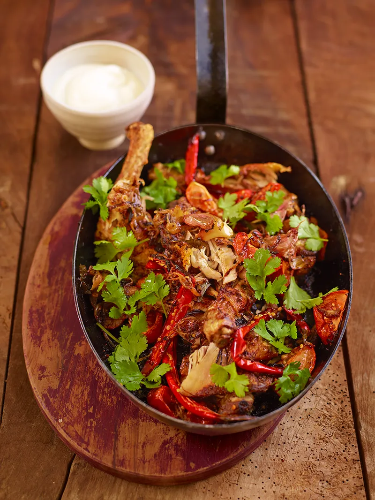

Spicy sticky chicken

“Chicken legs are much cheaper than the breasts, but they’re not a second-rate choice. It’s easy to get thigh meat beautifully tender, and the flavour is a bit stronger than breast too, so they can handle the spices in this recipe, which has a similar kind of punchy flavour dynamic to good jerk chicken.”
üïí 1 h 25 min
Servings: 4
Ingredients
- 3 fresh red chillies
- 2 onions
- 4 cloves of garlic
- 4 large plum tomatoes
- 1 bunch of fresh coriander
- 4 large free-range chicken legs, skin on
- olive oil
- 2 teaspoons garam masala
- 1 tablespoon crumbled dried curry leaves
- 1 tablespoon mustard seeds
- 2 tablespoons white wine vinegar
- fat-free natural yoghurt
Instructions
- Halve the chillies (deseed if you like), peel and finely slice the onions, then peel and crush the garlic. Quarter the plum tomatoes, and pick the coriander leaves.
- Rub the chicken legs all over with a drizzle of oil and the garam masala, then transfer to a large non-stick ovenproof pan.
- Add another drizzle of oil and fry the chicken over a medium heat for 10 to 15 minutes, or until lovely and dark golden all over. Be brave and let it get really nice and dark – it will make such a difference to the end result if you get it right at this stage. Drain off any excess fat.
- At this point, preheat the oven to 180ºC/350ºF/gas 4.
- Next, add the curry leaves, mustard seeds, chillies, onion and garlic to the chicken. Cook, stirring often, for 5 minutes, then add the tomatoes and white wine vinegar.
- Transfer the pan to the oven. Cook, uncovered, for 50 minutes, or until the chicken is cooked through and falling off the bone.
- Pop the pan on the hob and reduce the liquid until sticky. Scatter with the coriander leaves and serve with the cooling yoghurt. Delicious with rice or couscous, and a crisp, refreshing salad.
Nutrition per serving
of an adult's reference intake